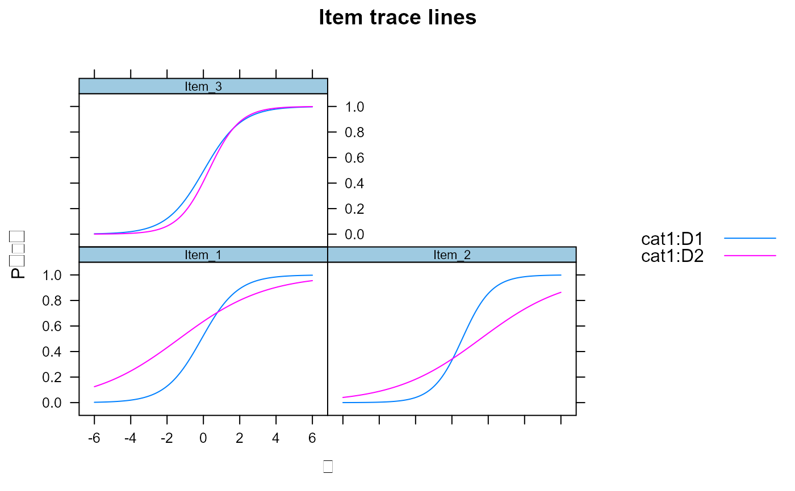
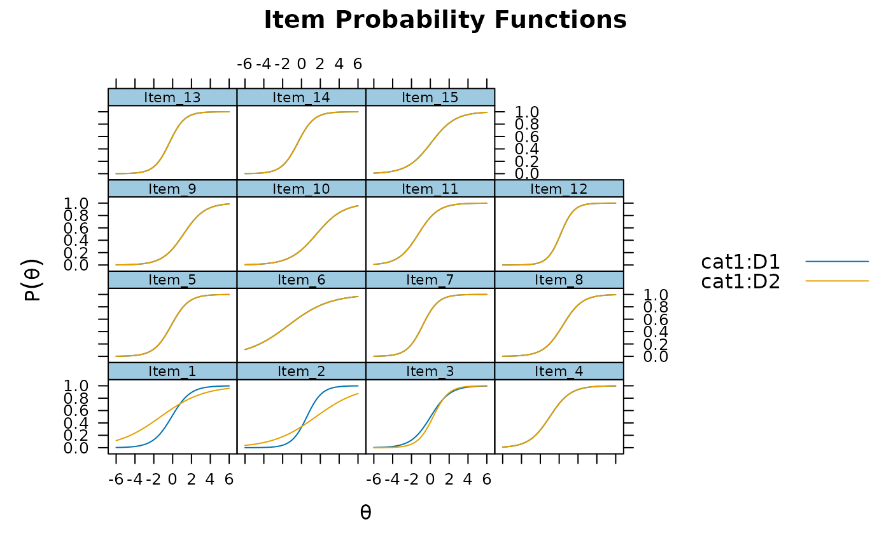

This function runs the Wald and likelihood-ratio approaches for testing differential
item functioning (DIF). This is primarily a convenience wrapper to the
multipleGroup function for performing standard DIF procedures. Independent
models can be estimated in parallel by defining a parallel object with mirtCluster,
which will help to decrease the runtime. For best results, the baseline model should contain
a set of 'anchor' items and have freely estimated hyper-parameters in the focal groups.
DIF( MGmodel, which.par, scheme = "add", items2test = 1:extract.mirt(MGmodel, "nitems"), seq_stat = "SABIC", Wald = FALSE, p.adjust = "none", return_models = FALSE, return_seq_model = FALSE, max_run = Inf, plotdif = FALSE, type = "trace", simplify = TRUE, verbose = TRUE, ... )
| MGmodel | an object returned from |
|---|---|
| which.par | a character vector containing the parameter names which will be inspected for DIF |
| scheme | type of DIF analysis to perform, either by adding or dropping constraints across groups. These can be:
|
| items2test | a numeric vector, or character vector containing the item names, indicating
which items will be tested for DIF. In models where anchor items are known, omit them from
this vector. For example, if items 1 and 2 are anchors in a 10 item test, then
|
| seq_stat | select a statistic to test for in the sequential schemes. Potential values are
(in descending order of power) |
| Wald | logical; perform Wald tests for DIF instead of likelihood ratio test? |
| p.adjust | string to be passed to the |
| return_models | logical; return estimated model objects for further analysis? Default is FALSE |
| return_seq_model | logical; on the last iteration of the sequential schemes, return
the fitted multiple-group model containing the freely estimated parameters indicative of
DIF? This is generally only useful when |
| max_run | a number indicating the maximum number of cycles to perform in sequential searches. The default is to perform search until no further DIF is found |
| plotdif | logical; create item plots for items that are displaying DIF according to the
|
| type | the |
| simplify | logical; simplify the output by returning a data.frame object with the differences between AIC, BIC, etc, as well as the chi-squared test (X2) and associated df and p-values |
| verbose | logical print extra information to the console? |
| ... | additional arguments to be passed to |
Generally, the precomputed baseline model should have been configured with two estimation properties: 1) a set of 'anchor' items, where the anchor items have various parameters that have been constrained to be equal across the groups, and 2) contain freely estimated latent mean and variance terms in all but one group (the so-called 'reference' group). These two properties help to fix the metric of the groups so that item parameter estimates do not contain latent distribution characteristics.
Chalmers, R., P. (2012). mirt: A Multidimensional Item Response Theory Package for the R Environment. Journal of Statistical Software, 48(6), 1-29. doi: 10.18637/jss.v048.i06
Chalmers, R. P., Counsell, A., and Flora, D. B. (2016). It might not make a big DIF: Improved Differential Test Functioning statistics that account for sampling variability. Educational and Psychological Measurement, 76, 114-140. doi: 10.1177/0013164415584576
Phil Chalmers rphilip.chalmers@gmail.com
# \donttest{ # simulate data where group 2 has a smaller slopes and more extreme intercepts set.seed(12345) a1 <- a2 <- matrix(abs(rnorm(15,1,.3)), ncol=1) d1 <- d2 <- matrix(rnorm(15,0,.7),ncol=1) a2[1:2, ] <- a1[1:2, ]/3 d1[c(1,3), ] <- d2[c(1,3), ]/4 head(data.frame(a.group1 = a1, a.group2 = a2, d.group1 = d1, d.group2 = d2))#> a.group1 a.group2 d.group1 d.group2 #> 1 1.1756586 0.3918862 0.14295747 0.5718299 #> 2 1.2128398 0.4042799 -0.62045026 -0.6204503 #> 3 0.9672090 0.9672090 -0.05802608 -0.2321043 #> 4 0.8639508 0.8639508 0.78449886 0.7844989 #> 5 1.1817662 1.1817662 0.20910659 0.2091066 #> 6 0.4546132 0.4546132 0.54573535 0.5457353itemtype <- rep('2PL', nrow(a1)) N <- 1000 dataset1 <- simdata(a1, d1, N, itemtype) dataset2 <- simdata(a2, d2, N, itemtype, mu = .1, sigma = matrix(1.5)) dat <- rbind(dataset1, dataset2) group <- c(rep('D1', N), rep('D2', N)) #### no anchors, all items tested for DIF by adding item constrains one item at a time. # define a parallel cluster (optional) to help speed up internal functions mirtCluster() # Information matrix with Oakes' identity (not controlling for latent group differences) # NOTE: Without properly equating the groups the following example code is not testing for DIF, # but instead reflects a combination of DIF + latent-trait distribution effects model <- multipleGroup(dat, 1, group, SE = TRUE) # Likelihood-ratio test for DIF (as well as model information) DIF(model, c('a1', 'd'))#>#> AIC AICc SABIC HQ BIC X2 df p #> Item_1 -34.621 -34.371 -29.773 -30.507 -23.419 38.621 2 0.000 #> Item_2 -20.364 -20.115 -15.516 -16.251 -9.162 24.364 2 0.000 #> Item_3 -10.101 -9.852 -5.253 -5.988 1.101 14.101 2 0.001 #> Item_4 -0.356 -0.106 4.492 3.757 10.846 4.356 2 0.113 #> Item_5 0.968 1.217 5.815 5.081 12.169 3.032 2 0.220 #> Item_6 3.441 3.690 8.289 7.554 14.643 0.559 2 0.756 #> Item_7 3.340 3.589 8.188 7.453 14.542 0.660 2 0.719 #> Item_8 -2.371 -2.122 2.477 1.742 8.831 6.371 2 0.041 #> Item_9 0.546 0.795 5.393 4.659 11.748 3.454 2 0.178 #> Item_10 3.215 3.464 8.062 7.328 14.416 0.785 2 0.675 #> Item_11 -4.853 -4.604 -0.006 -0.740 6.348 8.853 2 0.012 #> Item_12 1.497 1.746 6.345 5.610 12.699 2.503 2 0.286 #> Item_13 1.854 2.103 6.702 5.967 13.056 2.146 2 0.342 #> Item_14 -4.350 -4.101 0.498 -0.237 6.852 8.350 2 0.015 #> Item_15 3.831 4.080 8.679 7.944 15.033 0.169 2 0.919#>#> $Item_1 #> AIC AICc SABIC HQ BIC logLik X2 df p #> 1 36327.60 36331.12 36468.18 36446.87 36652.45 -18105.80 NaN NaN NaN #> 2 36292.97 36296.75 36438.41 36416.37 36629.03 -18086.49 38.621 2 0 #> #> $Item_2 #> AIC AICc SABIC HQ BIC logLik X2 df p #> 1 36313.34 36316.86 36453.92 36432.62 36638.19 -18098.67 NaN NaN NaN #> 2 36292.97 36296.75 36438.41 36416.37 36629.03 -18086.49 24.364 2 0 #> #> $Item_3 #> AIC AICc SABIC HQ BIC logLik X2 df p #> 1 36303.07 36306.60 36443.66 36422.35 36627.93 -18093.54 NaN NaN NaN #> 2 36292.97 36296.75 36438.41 36416.37 36629.03 -18086.49 14.101 2 0.001 #> #> $Item_4 #> AIC AICc SABIC HQ BIC logLik X2 df p #> 1 36293.33 36296.86 36433.91 36412.61 36618.18 -18088.67 NaN NaN NaN #> 2 36292.97 36296.75 36438.41 36416.37 36629.03 -18086.49 4.356 2 0.113 #> #> $Item_5 #> AIC AICc SABIC HQ BIC logLik X2 df p #> 1 36292.01 36295.53 36432.59 36411.29 36616.86 -18088.00 NaN NaN NaN #> 2 36292.97 36296.75 36438.41 36416.37 36629.03 -18086.49 3.032 2 0.22 #> #> $Item_6 #> AIC AICc SABIC HQ BIC logLik X2 df p #> 1 36289.53 36293.06 36430.12 36408.81 36614.39 -18086.77 NaN NaN NaN #> 2 36292.97 36296.75 36438.41 36416.37 36629.03 -18086.49 0.559 2 0.756 #> #> $Item_7 #> AIC AICc SABIC HQ BIC logLik X2 df p #> 1 36289.63 36293.16 36430.22 36408.91 36614.49 -18086.82 NaN NaN NaN #> 2 36292.97 36296.75 36438.41 36416.37 36629.03 -18086.49 0.66 2 0.719 #> #> $Item_8 #> AIC AICc SABIC HQ BIC logLik X2 df p #> 1 36295.35 36298.87 36435.93 36414.62 36620.20 -18089.67 NaN NaN NaN #> 2 36292.97 36296.75 36438.41 36416.37 36629.03 -18086.49 6.371 2 0.041 #> #> $Item_9 #> AIC AICc SABIC HQ BIC logLik X2 df p #> 1 36292.43 36295.96 36433.01 36411.71 36617.28 -18088.21 NaN NaN NaN #> 2 36292.97 36296.75 36438.41 36416.37 36629.03 -18086.49 3.454 2 0.178 #> #> $Item_10 #> AIC AICc SABIC HQ BIC logLik X2 df p #> 1 36289.76 36293.29 36430.34 36409.04 36614.61 -18086.88 NaN NaN NaN #> 2 36292.97 36296.75 36438.41 36416.37 36629.03 -18086.49 0.785 2 0.675 #> #> $Item_11 #> AIC AICc SABIC HQ BIC logLik X2 df p #> 1 36297.83 36301.35 36438.41 36417.11 36622.68 -18090.91 NaN NaN NaN #> 2 36292.97 36296.75 36438.41 36416.37 36629.03 -18086.49 8.853 2 0.012 #> #> $Item_12 #> AIC AICc SABIC HQ BIC logLik X2 df p #> 1 36291.48 36295.00 36432.06 36410.76 36616.33 -18087.74 NaN NaN NaN #> 2 36292.97 36296.75 36438.41 36416.37 36629.03 -18086.49 2.503 2 0.286 #> #> $Item_13 #> AIC AICc SABIC HQ BIC logLik X2 df p #> 1 36291.12 36294.65 36431.70 36410.40 36615.97 -18087.56 NaN NaN NaN #> 2 36292.97 36296.75 36438.41 36416.37 36629.03 -18086.49 2.146 2 0.342 #> #> $Item_14 #> AIC AICc SABIC HQ BIC logLik X2 df p #> 1 36297.32 36300.85 36437.91 36416.60 36622.18 -18090.66 NaN NaN NaN #> 2 36292.97 36296.75 36438.41 36416.37 36629.03 -18086.49 8.35 2 0.015 #> #> $Item_15 #> AIC AICc SABIC HQ BIC logLik X2 df p #> 1 36289.14 36292.67 36429.73 36408.42 36614.00 -18086.57 NaN NaN NaN #> 2 36292.97 36296.75 36438.41 36416.37 36629.03 -18086.49 0.169 2 0.919 #># same as above, but using Wald tests with Benjamini & Hochberg adjustment DIF(model, c('a1', 'd'), Wald = TRUE, p.adjust = 'fdr')#>#> W df p adj_pvals #> Item_1 36.513 2 0.000 0.000 #> Item_2 22.089 2 0.000 0.000 #> Item_3 13.444 2 0.001 0.006 #> Item_4 4.293 2 0.117 0.251 #> Item_5 3.009 2 0.222 0.370 #> Item_6 0.558 2 0.756 0.810 #> Item_7 0.658 2 0.720 0.810 #> Item_8 6.238 2 0.044 0.111 #> Item_9 3.438 2 0.179 0.336 #> Item_10 0.785 2 0.675 0.810 #> Item_11 8.621 2 0.013 0.050 #> Item_12 2.485 2 0.289 0.433 #> Item_13 2.133 2 0.344 0.469 #> Item_14 8.062 2 0.018 0.053 #> Item_15 0.168 2 0.919 0.919# equate the groups by assuming the last 5 items have no DIF itemnames <- colnames(dat) model <- multipleGroup(dat, 1, group, SE = TRUE, invariance = c(itemnames[11:ncol(dat)], 'free_means', 'free_var')) # test whether adding slopes and intercepts constraints results in DIF. Plot items showing DIF resulta1d <- DIF(model, c('a1', 'd'), plotdif = TRUE, items2test=1:10)resulta1d#> AIC AICc SABIC HQ BIC X2 df p #> Item_1 -43.490 -43.276 -38.642 -39.377 -32.288 47.490 2 0.000 #> Item_2 -33.840 -33.626 -28.993 -29.727 -22.638 37.840 2 0.000 #> Item_3 -5.497 -5.282 -0.649 -1.384 5.705 9.497 2 0.009 #> Item_4 2.395 2.609 7.242 6.508 13.596 1.605 2 0.448 #> Item_5 3.140 3.354 7.988 7.253 14.342 0.860 2 0.651 #> Item_6 1.122 1.336 5.970 5.235 12.324 2.878 2 0.237 #> Item_7 3.083 3.297 7.931 7.196 14.285 0.917 2 0.632 #> Item_8 2.857 3.071 7.705 6.970 14.059 1.143 2 0.565 #> Item_9 3.674 3.888 8.521 7.787 14.875 0.326 2 0.849 #> Item_10 3.154 3.368 8.001 7.267 14.355 0.846 2 0.655# test whether adding only slope constraints results in DIF for all items DIF(model, 'a1', items2test=1:10)#> AIC AICc SABIC HQ BIC X2 df p #> Item_1 -20.871 -20.763 -18.447 -18.815 -15.270 22.871 1 0.000 #> Item_2 -34.676 -34.567 -32.252 -32.619 -29.075 36.676 1 0.000 #> Item_3 0.435 0.543 2.859 2.492 6.036 1.565 1 0.211 #> Item_4 1.980 2.088 4.404 4.036 7.581 0.020 1 0.887 #> Item_5 1.754 1.862 4.178 3.811 7.355 0.246 1 0.620 #> Item_6 -0.564 -0.456 1.860 1.492 5.037 2.564 1 0.109 #> Item_7 1.093 1.202 3.517 3.150 6.694 0.907 1 0.341 #> Item_8 1.431 1.540 3.855 3.488 7.032 0.569 1 0.451 #> Item_9 1.863 1.972 4.287 3.920 7.464 0.137 1 0.712 #> Item_10 1.775 1.884 4.199 3.832 7.376 0.225 1 0.636# Determine whether it's a1 or d parameter causing DIF (could be joint, however) (a1s <- DIF(model, 'a1', items2test = 1:3))#> AIC AICc SABIC HQ BIC X2 df p #> Item_1 -20.871 -20.763 -18.447 -18.815 -15.270 22.871 1 0.000 #> Item_2 -34.676 -34.567 -32.252 -32.619 -29.075 36.676 1 0.000 #> Item_3 0.435 0.543 2.859 2.492 6.036 1.565 1 0.211(ds <- DIF(model, 'd', items2test = 1:3))#> AIC AICc SABIC HQ BIC X2 df p #> Item_1 -18.568 -18.460 -16.145 -16.512 -12.968 20.568 1 0.000 #> Item_2 1.843 1.951 4.266 3.899 7.443 0.157 1 0.691 #> Item_3 -6.229 -6.121 -3.805 -4.173 -0.628 8.229 1 0.004### drop down approach (freely estimating parameters across groups) when ### specifying a highly constrained model with estimated latent parameters model_constrained <- multipleGroup(dat, 1, group, invariance = c(colnames(dat), 'free_means', 'free_var')) dropdown <- DIF(model_constrained, c('a1', 'd'), scheme = 'drop') dropdown#> AIC AICc SABIC HQ BIC X2 df p #> Item_1 -43.297 -43.160 -38.450 -39.184 -32.096 47.297 2 0.000 #> Item_2 -32.642 -32.504 -27.794 -28.529 -21.440 36.642 2 0.000 #> Item_3 -10.510 -10.372 -5.662 -6.397 0.692 14.510 2 0.001 #> Item_4 1.885 2.023 6.733 5.998 13.087 2.115 2 0.347 #> Item_5 3.155 3.293 8.003 7.268 14.357 0.845 2 0.655 #> Item_6 1.914 2.051 6.761 6.027 13.116 2.086 2 0.352 #> Item_7 3.887 4.025 8.735 8.000 15.089 0.113 2 0.945 #> Item_8 0.703 0.840 5.550 4.816 11.905 3.297 2 0.192 #> Item_9 3.059 3.197 7.907 7.172 14.261 0.941 2 0.625 #> Item_10 3.631 3.769 8.479 7.744 14.833 0.369 2 0.832 #> Item_11 -0.765 -0.627 4.083 3.348 10.437 4.765 2 0.092 #> Item_12 3.511 3.649 8.359 7.624 14.713 0.489 2 0.783 #> Item_13 3.416 3.553 8.263 7.529 14.618 0.584 2 0.747 #> Item_14 -0.690 -0.553 4.157 3.423 10.511 4.690 2 0.096 #> Item_15 3.599 3.737 8.447 7.712 14.801 0.401 2 0.818### sequential schemes (add constraints) ### sequential searches using SABIC as the selection criteria # starting from completely different models stepup <- DIF(model, c('a1', 'd'), scheme = 'add_sequential', items2test=1:10)#> Checking for DIF in 3 more items #> Computing final DIF estimates...stepup#> AIC AICc SABIC HQ BIC X2 df p #> Item_1 -43.161 -43.007 -38.314 -39.048 -31.959 47.161 2 0.000 #> Item_2 -34.224 -34.070 -29.377 -30.111 -23.022 38.224 2 0.000 #> Item_3 -7.368 -7.214 -2.520 -3.255 3.834 11.368 2 0.003# step down procedure for highly constrained model stepdown <- DIF(model_constrained, c('a1', 'd'), scheme = 'drop_sequential')#> Checking for DIF in 12 more items #> Computing final DIF estimates...stepdown#> AIC AICc SABIC HQ BIC X2 df p #> Item_1 -43.161 -43.007 -38.314 -39.048 -31.959 47.161 2 0.000 #> Item_2 -34.224 -34.070 -29.377 -30.111 -23.022 38.224 2 0.000 #> Item_3 -7.368 -7.214 -2.520 -3.255 3.834 11.368 2 0.003# view final MG model (only useful when scheme is 'add_sequential') updated_mod <- DIF(model, c('a1', 'd'), scheme = 'add_sequential', return_seq_model=TRUE)#> Checking for DIF in 3 more items #> Computing final DIF estimates...# }